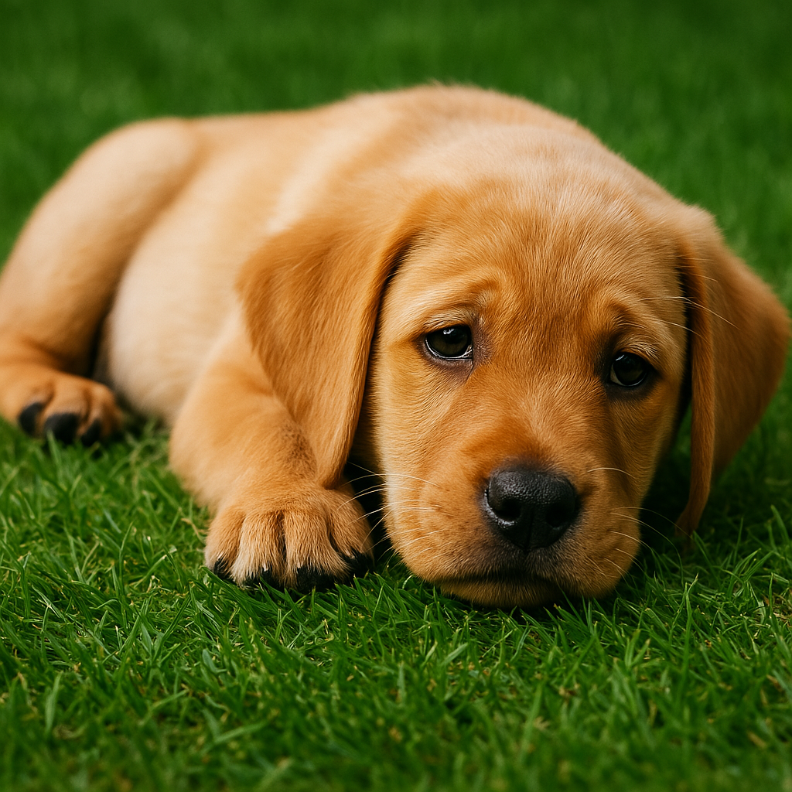

Who are you?
Are you a OWNER or a PET FRIEND?
Pet Friend
Have you ever wished you could spend some time with a furry friend but did not have the time, money, or enough space to care for one? If so, we know how you feel and that’s why we created a place where you and dog owners can connect and share what we all love: pets.
Pet Owner
Our pets have their own feelings and need as much care and attention as any person would. Perhaps you want to give your pet some social time — to help your buddy develop better social skills, to have that first contact with kids, to provide extra playtime, to develop new friendships, or even just to see the smile on other people's faces. If any of those apply, you are in the right place.